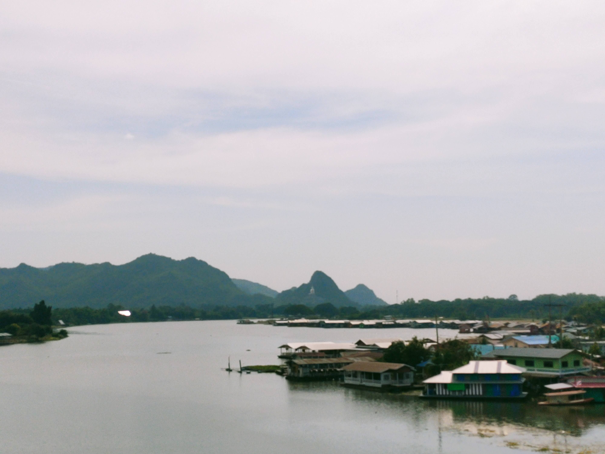

Life Memory
Life Memory

ภาพถ่าย : บ้านริมน้ำ
ภาพของชาวบ้าน ในจังหวัด กาญจนบุรี ภาพนี้ถ่ายบน Skywalk ซึ่งอยู่ในตัวเมือง เป็นจุดตัดระหว่าง
เขตเมือง และชุมชนดั้งเดิม ให้ความรู้สึกสงบนิ่งและชุ่มชื่นในใจ เหมือนกำลังมองภาพอตีด
ในขณะที่ตนยืนอยู่ในเมืองหรือก็คือ อนาคตของอดีตนั่นเอง